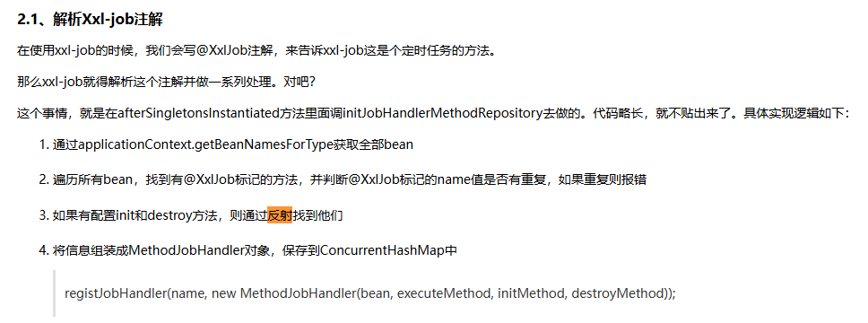

【薛定谔的字段】XXL-JOB执行器不受事务管理
一、问题
近期在开发过程中发现，设备相关数据的某个字段偶尔出现 null 值，并非每次必现。该问题主要发生在任务刚执行完成，设备立即调用接口获取数据时。初步判断与数据写入和读取的时序有关，存在一定的竞争条件。
二、排查
2.1 初步怀疑异常回滚
最初怀疑是任务执行过程中发生异常并触发事务回滚，导致字段未能正确写入而为 null。但通过查阅近期 ELK 日志，未发现相关异常记录，排除了因异常回滚导致数据缺失的可能性。
2.2 字段填充
随后将排查重点转向该字段的填充方法。考虑到数据写入时机问题，怀疑是否存在事务传播机制不当，导致部分数据在事务未完成前就被提前写入数据库，后续流程继续执行，从而引发字段为null的异常。
2.3 检查事务注解与调用方式
在相关方法中发现其使用了 @Transactional(rollbackFor = Exception.class) 注解，该注解仅用于异常时回滚，并未强制开启新事务（即 propagation = REQUIRES_NEW），因此不会导致数据提前提交。
进一步检查发现，该方法内部存在 this. 方式的自调用，可能因为 Spring AOP 代理机制导致事务失效？尝试改为通过 service Bean 引用进行外部调用后，问题依然存在。
2.4 XXL-JOB 反射调用与事务管理
这里就猛的想起，XXL-JOB好像是通过反射进行定时调用的。立马Google确认， 确定是通过反射进行调用的。那么就基本确定，很有可能是XXL-JOB执行器反射，导致方法不受Springboot的事务管理。

上图原文链接：https://www.cnblogs.com/yejg1212/p/14794098.html
三、解决：
在定时任务类和方法上加上@Transactional注解，经过多轮测试，null值不再出现。
四、问题点：
4.1 为啥事务失效？
@Transactional 是通过 Spring AOP 来实现的。只有方法是通过 Spring 容器生成的代理对象 调用时，事务切面才会生效。如果方法不是通过代理调用（比如直接 new 出来的对象，或者直接在同一个类里this自调用），事务就不会生效。
XXL-JOB 调度任务时，是通过 反射调用你标注的方法。 所以说，它并不是通过 Spring AOP 代理对象去调用的，而是直接调用你 @Component 类里的那个方法。
4.2 为啥加了 @Transactional 就生效了？
当给方法加上 @Transactional，Spring 在启动时会发现这个方法需要事务切面，会为整个类生成一个代理对象。
XXL-JOB 在执行任务时，仍然是通过 Spring 容器中的 bean 去拿这个类，但此时拿到的已经是代理对象。当 XXL-JOB 通过反射调用这个代理对象的方法时，Spring AOP 的事务切面就会拦截到，事务开始生效。
4.3 正确的解决方式
因为项目上存在重构分支和开发分支，后期打算将重构分支切为生产，所以目前临时添加@Transactional解决掉问题。
实际上， 执行器方法应该只做参数校验、任务调度、开始结束日志等。实际的业务逻辑，应当放入service中，使用@Transactional管理事务。